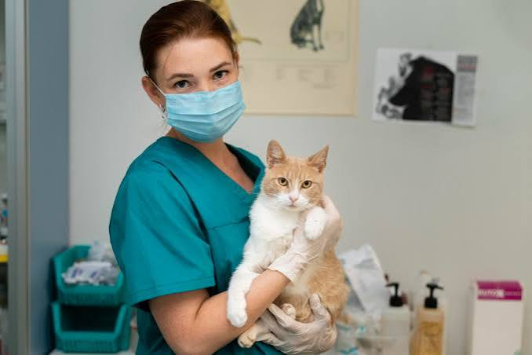
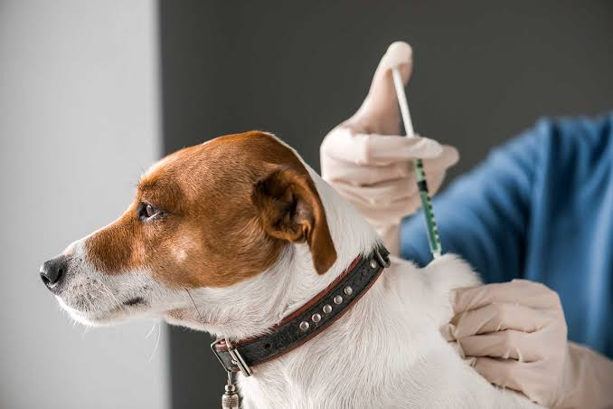
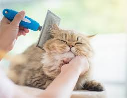

Cuidamos a tu mejor amigo como si fuera nuestro
En Veterinaria San Marcos ofrecemos atención médica integral, peluquería y urgencias 24/7 para perros, gatos y animales exóticos. Más de 10 años de experiencia brindando salud y bienestar.
Ver Servicios Contáctanos
Nuestros Servicios Destacados
Consulta General
Revisión médica completa para prevenir enfermedades. Tu mascota en las mejores manos profesionales.
$15.000
Agendar Ahora
Vacunas y Desparasitación
Protege a tu compañero de enfermedades con nuestro calendario de prevención y vacunas al día.
Desde $12.000
Agendar Ahora
Peluquería y Baño
Baño, corte de pelo, limpieza de oídos y corte de uñas. ¡Dejamos a tu mascota hermosa y feliz!
Desde $20.000
Agendar AhoraLo que dicen nuestros clientes
"Salvaron a mi perrito Max cuando se enfermó a media noche. La atención de urgencias fue rápida y los doctores muy empáticos. Recomendados al 100%."
- Andrea Silva
"El servicio de peluquería es excelente. Mi gata suele ser muy nerviosa, pero la trataron con tanto amor que salió ronroneando."
- Carlos Mendoza
"Tienen precios accesibles y las instalaciones son cómodas. Además, tienen buena atención al cliente."